#Introduction
ReelForge turns a voice recording and one YAML file into a finished vertical explainer video — 1080×1920 at 30 fps, ready for TikTok, Instagram Reels and YouTube Shorts.
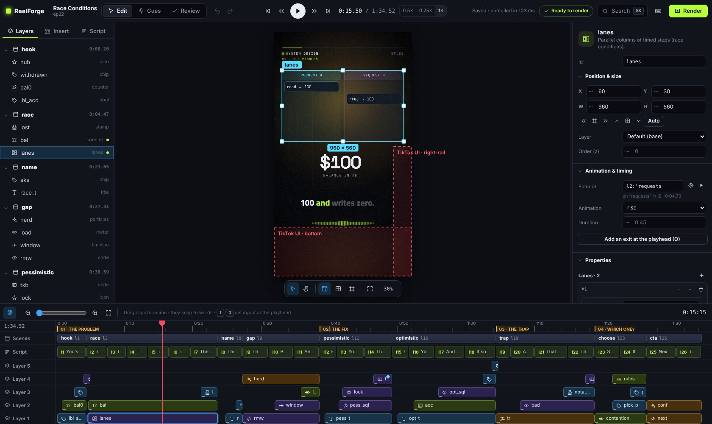
You write what you say, sentence by sentence, and describe what appears on screen and on which word. ReelForge animates diagrams, code, tables and titles exactly when you say them, adds word-by-word captions, sound effects and series branding, masters the audio and encodes platform-ready files.
#Highlights
- A real editor, made simple. Place components on the frame like in a design tool, retime them on a timeline like in a video editor, edit every property in the inspector, with undo, smart guides, a command palette and keyboard shortcuts for everything.
- Timed to your words. Elements appear on the word that names them. Re-record a sentence and everything after it stays in sync, because animations follow your words, not seconds.
- English and Arabic. Word-by-word captions in English, and in Arabic with correct right-to-left layout
when English terms are mixed in:
الـ clientstays together and؟lands on the correct side. - Works with AI assistants (optional). A built-in MCP server lets Claude, Cursor, Copilot, Codex, Gemini and others write scripts, build scenes and check frames for you.
- 21 animated components for technical explainers: nodes and arrows with moving packets, code that types itself, race-condition lanes, tables, timelines, meters, counters, token buckets, a phone mock, stamps…
- Professional sound: procedural sound effects on every hit and transition, voice mastered to −14 LUFS (the platforms' loudness target), effects ducked under the voice.
- Platform-ready output: an archival master MP4, a share MP4 that fits the upload limit you choose,
SRT captions, a contact sheet and a
publish.mdwith your caption, hashtags and pinned comment. - Offline and private. Everything runs on your computer. No account, no subscription, no upload.
- No generated media. The video engine never generates voices or visuals: your voice, your words, your design, consistent every time. (AI assistants are optional.)
- Deterministic. The same inputs always produce the same frames.
#What is in the package
| Folder / file | Contents |
|---|---|
install.bat, install.sh |
One-command installers for Windows, macOS and Linux |
start.bat, start.sh, ReelForge.command |
Open the dashboard |
reelforge.cmd, reelforge |
The command-line interface |
examples/season1/ |
Nine complete example episodes in English (“System Design”) |
examples/season1-arabic/ |
The same series in Arabic with English technical terms |
AGENTS.md, CLAUDE.md, GEMINI.md, … |
Instructions for AI assistants (see AI agents & MCP) |
themes/, presets/ |
Editable visual themes and platform layouts |
documentation/ |
This documentation (offline) |
packages/ |
Full TypeScript source code |
LICENSE.md, THIRD-PARTY-NOTICES.md |
License terms and open-source credits |
#Requirements
| Minimum | Recommended | |
|---|---|---|
| Operating system | Windows 10, macOS 13, Ubuntu 22.04 (or any recent Linux) | Windows 11, macOS 14+, Ubuntu 24.04 |
| CPU / RAM | 4 cores, 8 GB | 8 threads or more, 16 GB (renders scale with cores) |
| Disk | 2 GB free (plus ~2 GB temporary space per render) | SSD |
| Software | Node.js 22 LTS, ffmpeg 6+ | installed automatically by the installer where possible |
A 2-minute episode renders in roughly 5–10 minutes on an 8-thread laptop.
#Installation
Unzip the package anywhere you like (for example Documents/ReelForge). Avoid folders synced by OneDrive
or iCloud for faster renders.
#Windows 10 / 11
- Install Node.js 22 LTS from https://nodejs.org (keep the default options). If it is missing, the
installer can install it for you with
winget. - Double-click
install.bat. It will:- check Node.js,
- offer to install ffmpeg with
winget(answer Y), - install ReelForge's dependencies,
- download the pinned Chromium browser used for rendering,
- run a full environment check.
- Double-click
start.batto open the dashboard.
If Windows SmartScreen warns about the script, choose More info → Run anyway. If ffmpeg was just installed, close and reopen
start.batso Windows picks up the new PATH.
#macOS
Install Node.js 22 LTS from https://nodejs.org and Homebrew from https://brew.sh.
Open Terminal in the ReelForge folder (Finder → right-click the folder → New Terminal at Folder) and run:
./install.shAnswer Y when it offers
brew install ffmpeg.Double-click
ReelForge.command(or run./start.sh) to open the dashboard.
#Linux
./install.sh # add --yes to accept every prompt
./start.sh # opens the dashboard
The installer uses your package manager (apt, dnf, pacman or zypper) for ffmpeg and can install
Chromium's system libraries (it asks for sudo).
#Check your setup at any time
reelforge doctor # Windows: reelforge.cmd doctor
It checks Node.js, ffmpeg (version, encoders and filters), Chromium and the bundled fonts, and prints the exact fix for anything missing. The dashboard shows the same check as the status pill in the top bar.
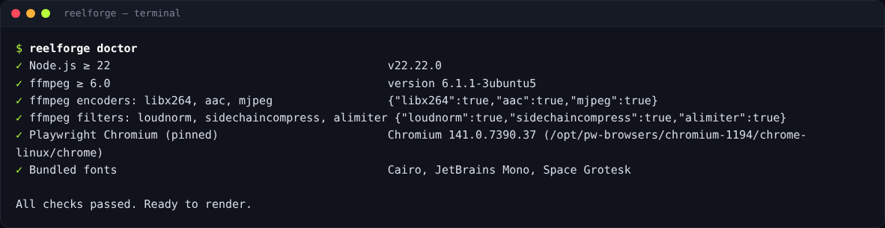
#Updating
Download the new version from your CodeCanyon Downloads page, unzip it next to the old one, copy your
episodes/ folder (and any custom themes/ or presets/) into the new folder, then run the installer
again. Your episodes are plain files: nothing else needs migrating.
#Uninstalling
Delete the ReelForge folder. The Chromium download lives in your user cache folder
(%LOCALAPPDATA%\ms-playwright on Windows, ~/Library/Caches/ms-playwright on macOS,
~/.cache/ms-playwright on Linux) and can be deleted too.
#Quick start: your first reel
This walk-through takes about 15 minutes for a 30-second episode.
#1. Create an episode
Open the dashboard (start.bat / ./start.sh) and click + New episode. Give it an id such as
ep10, a title, your series name and the language of your voice-over. Choose English or
Arabic; Arabic sentences can mix in English terms. ReelForge creates
episodes/ep10/episode.yaml and opens the editor.
#2. Write the script
In the editor, open the Script tab on the left. Write one spoken sentence per line:
script:
- text: 'Ever paid online and your connection dropped?'
- text: 'That problem is called a Duplicate Charge.'
- text: 'The fix is an Idempotency key.'
Keep sentences short. Line 1 is your hook.
#3. Design the scenes
Click Insert and pick a component. For example, add a title and type
**Duplicate** Charge (words between ** get the accent color). Then drag it into place on the
canvas. In the inspector, put the playhead on the word Duplicate and click the target button
next to Enter at. The title now appears exactly when you say that word.
Repeat for each idea: nodes and arrows for systems, code that types itself, counters, tables, checklists, stamps. Drag clips on the timeline to retime them; they snap to your words.
Not recorded yet? That's fine. ReelForge writes estimated (draft) cues, so the preview already plays with realistic timing.
#4. Record
Record yourself reading the script with any app (phone, Audacity, OBS…). Leave a short pause
between sentences. In the dashboard, click Upload voice and choose the file (WAV, MP3, M4A,
OGG, OPUS or FLAC). It is converted and saved as voice.wav.
#5. Mark the cues
In the editor, switch to Cues (Alt+2). Play the recording and press Space at the start of each sentence. See Recording and cues for nudging, re-marking and word-level marks. Every animation follows your real timing automatically.
#6. Review and render
Switch to Review (Alt+3). It lists any problem with a fix hint, such as text that
overflows or an element under the platform buttons. Fix the problems, then click Render.
When rendering finishes, watch the result and upload out/ep10.share.mp4 with the caption from
out/publish.md.
Prefer working with an AI assistant? See AI agents & MCP. An assistant can write the script, build the scenes and check the frames for you.
#The dashboard
reelforge studio (or start.bat / start.sh) opens the dashboard at http://127.0.0.1:4310. It lists
your episodes (the episodes/ folder) and the examples.
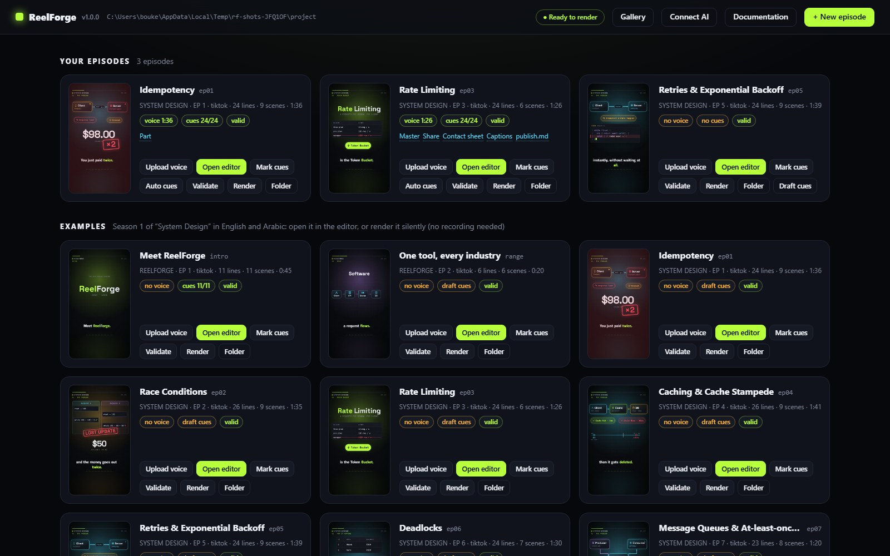
Each card shows a live thumbnail, the series, preset, number of lines and scenes, the duration, and status chips:
| Chip | Meaning |
|---|---|
voice 1:15 / no voice |
Whether a recording is present, and its length |
cues 24/24 / draft cues / no cues |
How many sentences are marked; draft cues are estimates |
valid / 2 warnings / 1 error |
Result of the static checks (hover an error to read it) |
| Button | What it does |
|---|---|
| Upload voice | Choose a recording; it is converted to voice.wav (48 kHz) |
| Open editor | Opens the visual editor for this episode in a new tab (see The editor) |
| Mark cues | Opens the editor in Cues mode, ready to mark when each sentence starts |
| Validate | Runs every check, including the headless text-overflow and caption checks |
| Render | Choose the platform preset, share size, SFX and speed; progress, FPS and ETA appear live; Cancel stops cleanly |
| Folder | Opens the episode folder in your file manager |
| Draft cues | (only without cues) estimates timing from the text |
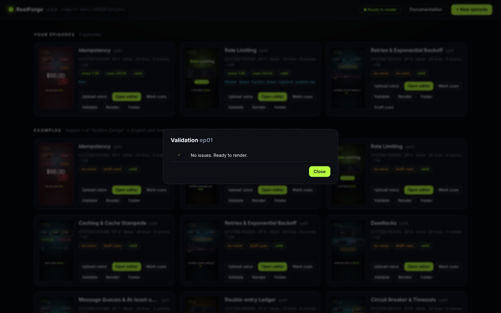
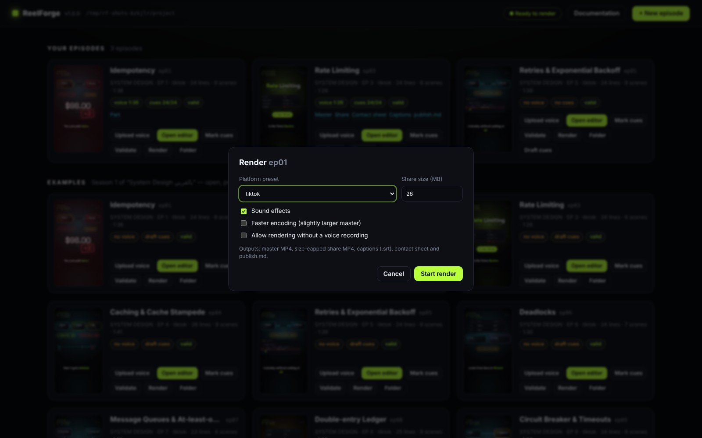
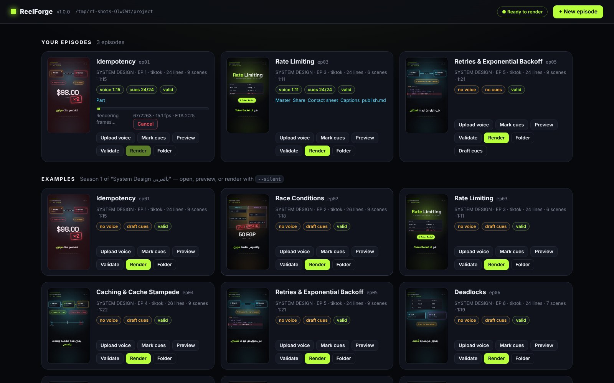
Finished outputs appear as links on the card: videos open in a player with a Download button.
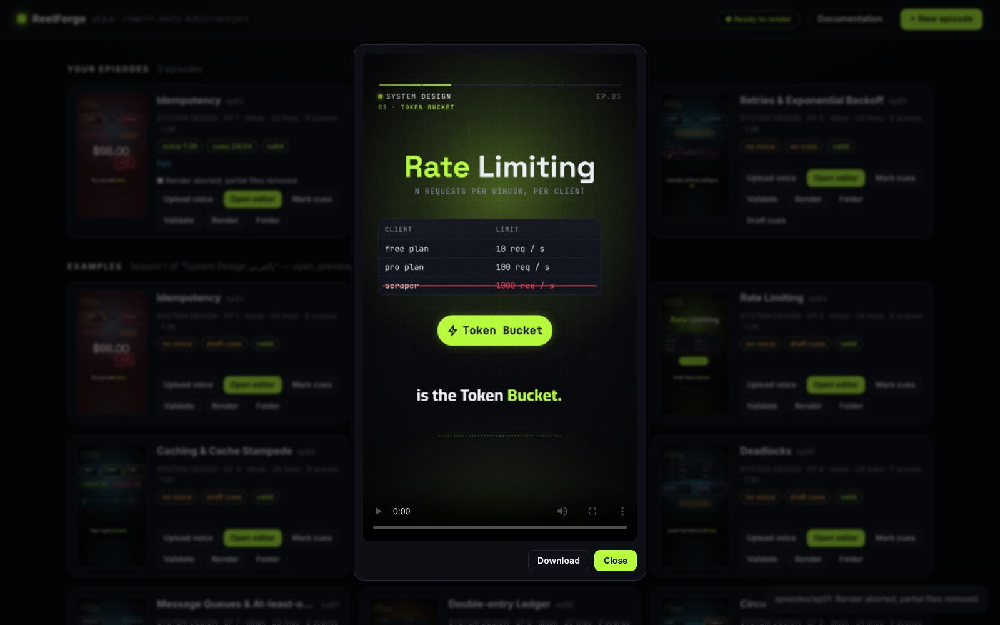
Only one render runs at a time. The dashboard only listens on 127.0.0.1: it is not reachable from other
computers.
#Recording and cues
#Recording tips
- Record in a quiet room, 20–30 cm from the microphone. Any sample rate works; ReelForge masters the loudness for you (−14 LUFS).
- Read one script line per breath and leave a short pause (0.3–0.5 s) between lines. Pauses make marking faster and give animations room.
- Re-recording later? Upload the new take: ReelForge warns that the voice changed so you can re-check the cues.
#Cues mode
A cue is the moment a script line starts. Everything in the episode is timed relative to cues, so a re-recorded line only needs its cue moved — every animation follows.
Open the editor and switch to Cues (Alt+2), or click Mark cues on the dashboard. The script is listed on the right, the playhead and waveform are on the timeline.
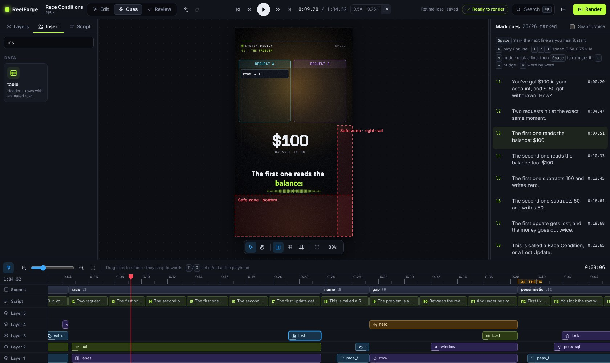
| Key | Action |
|---|---|
| Enter / K | Play / pause |
| 1 / 2 / 3 | Speed 0.5× / 0.75× / 1× (slower = more accurate) |
| Space | Mark the next unmarked line at the playhead |
| Click a line or ↑ / ↓ | Select a line to re-mark it (then press Space) |
| ← / → | Nudge the selected cue by 50 ms (Shift: 10 ms) |
| Backspace | Undo the last change |
| S / A | Snap the selected cue to the nearest voice onset / toggle auto-snap |
| G | Jump to the selected cue |
| W | Word mode: mark each word of the selected line with Space |
| J / L, , / . | Back / forward 1 s, previous / next frame |
Every change is saved instantly to cues.json and can be undone with ⌘/Ctrl+Z. Lines out of order
are shown in red. You can also drag a line's clip on the Script track of the timeline, in Edit or
Cues mode.
#Word mode
By default ReelForge estimates when each word starts from its length. For precise hits (a stamp landing exactly on “twice”), select the line, press W, play, and press Space on each word.
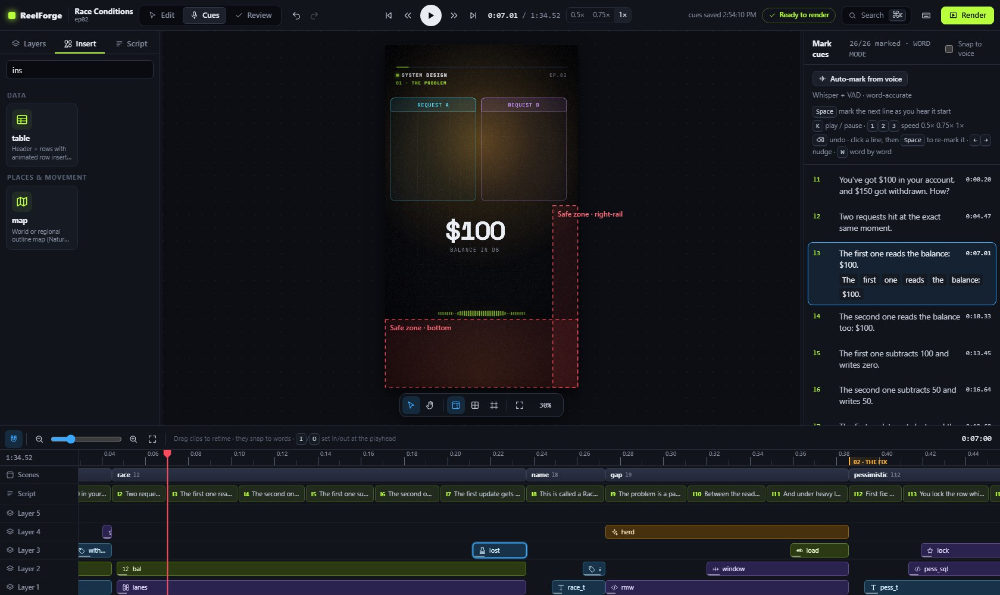
#The editor
The editor is where you design an episode. It works like a design tool on top of a video timeline, but it is made for one job. You place animated components on the real 1080×1920 frame and time them to the words you speak.
Open it from the dashboard with Open editor, or run reelforge edit <id>.
| Area | What it holds |
|---|---|
| Top bar | Modes (Edit · Cues · Review), undo/redo, transport and speed, status, checks, search, Render |
| Left panel | Layers (scenes → elements), Insert (the 21 components) and Script (your lines) |
| Canvas | The real frame, rendered by the same engine as the final video, synced to your voice |
| Right panel | The Inspector for whatever is selected (or the episode settings when nothing is) |
| Timeline | Chapters, scenes, script lines, one track per layer, and your voice waveform with sound effects |
Every change is written to episode.yaml immediately, and your comments and formatting are kept.
Every change can also be undone (⌘Z / Ctrl+Z), including cue changes. You can keep
episode.yaml open in a text editor at the same time. Edits made there appear in the editor as
soon as you save.
#Canvas
- Click an element to select it. Alt+click selects the one underneath. Hover shows an outline.
- Drag to move. Smart guides snap to the frame center, the scene area and other elements. Hold Shift to move in a straight line, or Alt to turn snapping off.
- Drag a handle to resize. Hold Shift to keep the proportions, or Alt to resize from the center.
- Use the arrow keys to nudge 1 px (Shift: 10 px).
- Double-click a title, label, chip, stamp, quote, node or ending card to edit its text in place. Press Enter to save or Esc to cancel.
- Drag a component from Insert onto the canvas to add it there.
- Zoom with ⌘/Ctrl + wheel, Shift+1 (fit), Shift+2 (selection) or Shift+0 (100%). Pan with the wheel, by holding Space, or with the H tool.
- The floating toolbar toggles the safe zones (Z, where TikTok/Reels/Shorts draw their buttons), stage and caption guides (B) and element outlines (E).
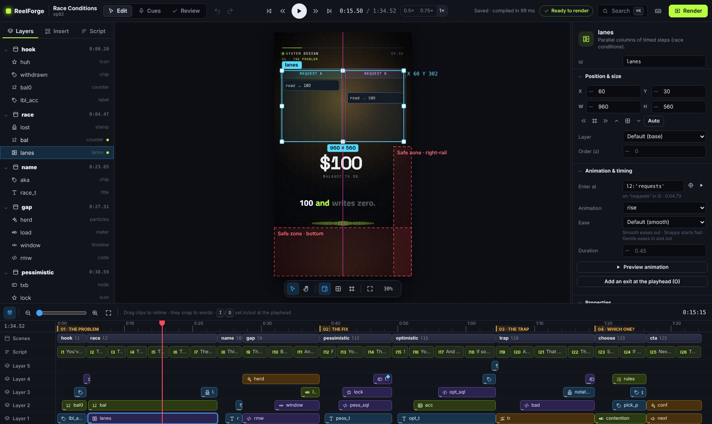
#Layers, Insert and Script
Layers lists every scene and its elements. The top of each list is drawn on top. Click to select (the playhead jumps to a moment when the element is visible), drag to reorder, and double-click to rename. Renaming also updates any arrows that point at the element. A green dot marks what is on screen at the playhead.
Insert shows the components in groups: Text, Diagrams, Data, Code & devices, Effects & endings. Click one to add it to the current scene at the playhead, or drag it onto the canvas. New elements start with sensible content that you can change at once.
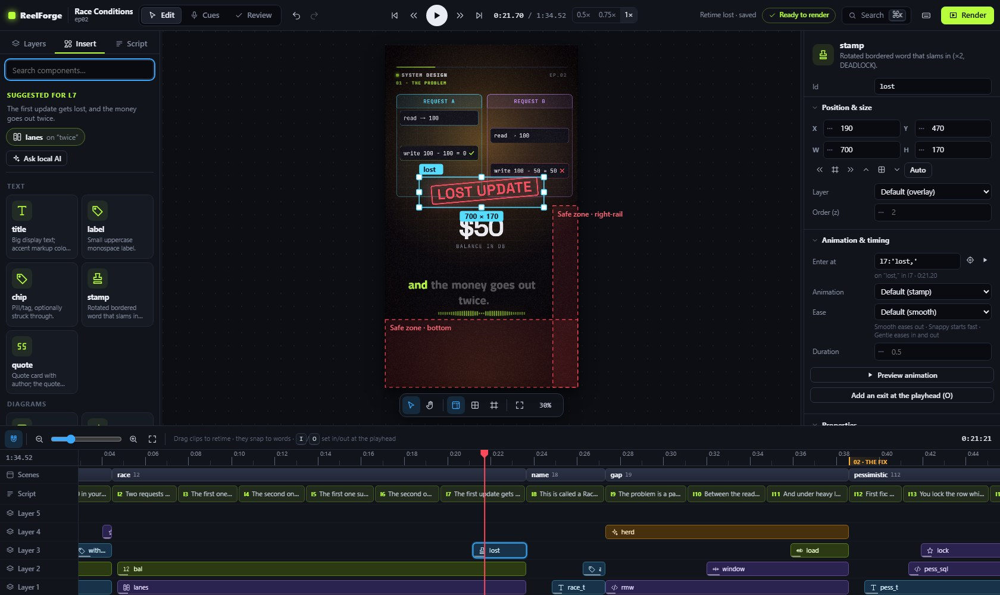
Script is your text, one spoken sentence per line. Edit a line in place. Use the line's buttons to add, delete or reorder lines. Arabic, English and mixed lines are all supported, and the direction is detected automatically.
#Inspector
The inspector edits every property of the selection:
- Position & size (X, Y, W, H), alignment buttons, layer and stacking order.
- Animation & timing: when it enters, the animation and duration, and an optional exit. The
target button sets a time from the playhead. It writes a word-anchored time such as
l3:'bucket'whenever the playhead is on a word, so the element stays on that word even after you re-record. - Properties: every option of the component, generated from its schema. That covers text fields, numbers (drag the dotted handle to scrub), on/off switches, menus, colors (theme swatches or any color), times, and lists you can add to, reorder and remove from.
- Effects (shake, flash, glitch, pulse, bump) and States (prop changes at a time, e.g. a node turning red).
- Sound: automatic sound effects on or off.
- YAML (advanced): the exact YAML of the element. Anything the format supports can be edited here.
With a scene selected, the inspector edits its start and end, transition, area (stage or full frame), background glow and auto-layout. With a script line selected, it edits the text, caption, line breaks and cue, and lists every word (click one to jump to it). With nothing selected, it edits the episode: title, series, platform, theme, language, publishing texts, audio and chapters.
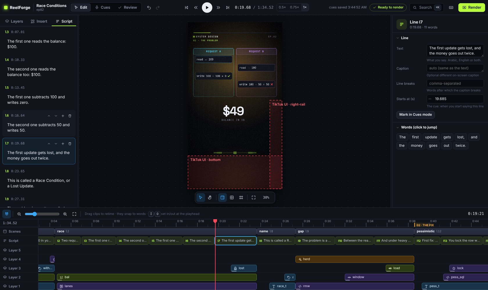
#Timeline
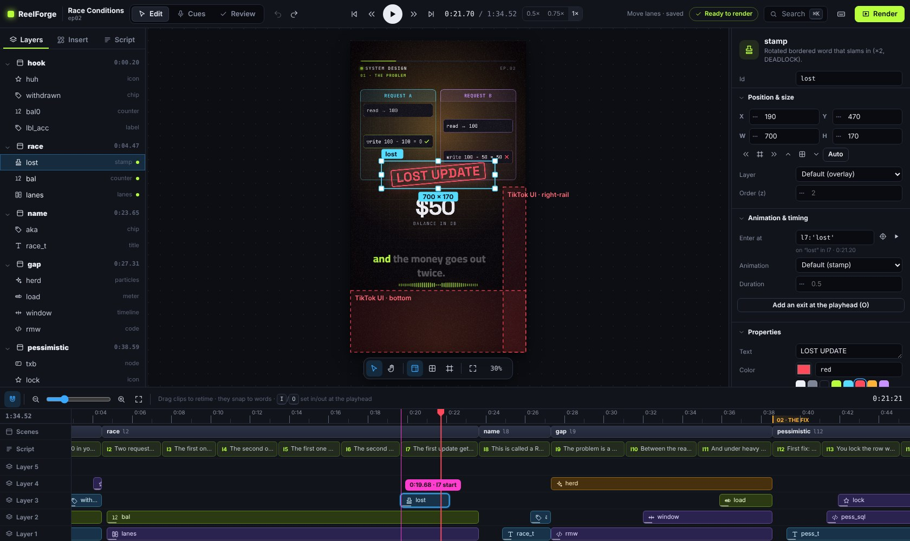
- Click or drag the ruler to move the playhead. Chapters are shown on the ruler.
- Scenes: drag a scene's start to move it.
- Script: each line is a clip. Drag it to change its cue. Its word marks move with it.
- Layer tracks: each element is a clip from when it enters to when it leaves.
- Drag the body to retime it.
- Drag the left edge to change when it enters.
- Drag the right edge to set when it leaves. Dragging it to the end of the scene removes the exit.
- Diamonds mark effects (orange) and state changes (blue).
- Clips snap to words, line starts, scenes and the playhead. The badge shows the time expression that will be saved. Hold Alt to drag freely, or press S to turn snapping off.
- I and O set the selected element's in and out points at the playhead.
- Zoom with = / −, the slider or ⌘/Ctrl + wheel. \ fits the whole episode.
#Search everything: ⌘K / Ctrl+K
The command palette finds every command, component, scene, element and script line. Type a few
letters and press Enter. Try insert counter, go to scene trap or safe zones.
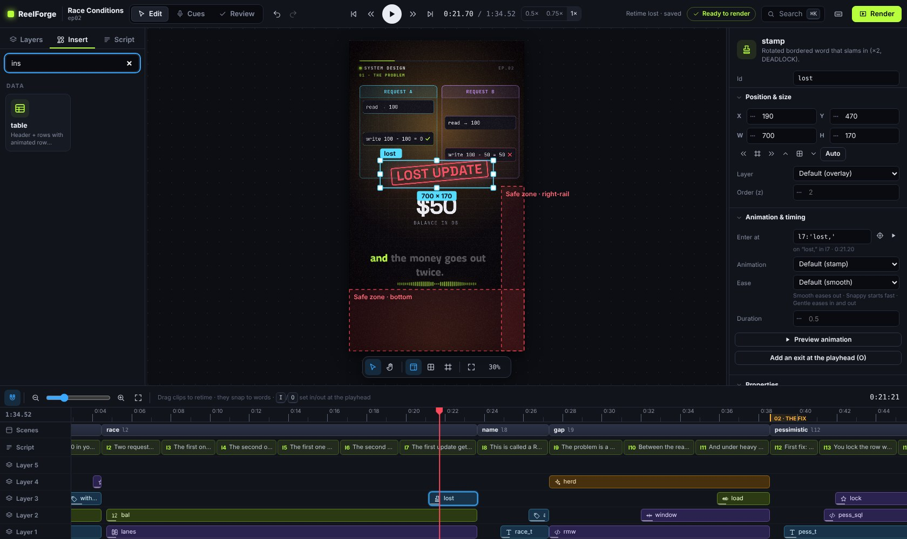
Right-click the canvas, a layer or a clip for the most common actions. Press ? to see every shortcut.
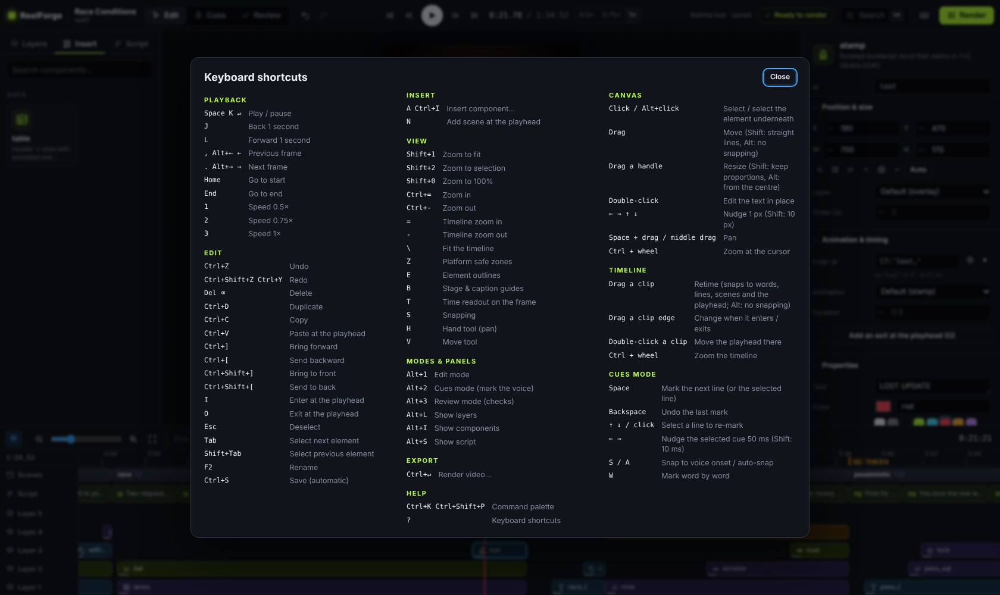
#Review mode
Review (Alt+3, or click the checks pill in the top bar) lists every issue found by the checks: schema, timing, overlaps, safe zones, text overflow measured in the real browser, and caption length. Each issue has a fix hint. Click an issue to jump to its time and select the element.
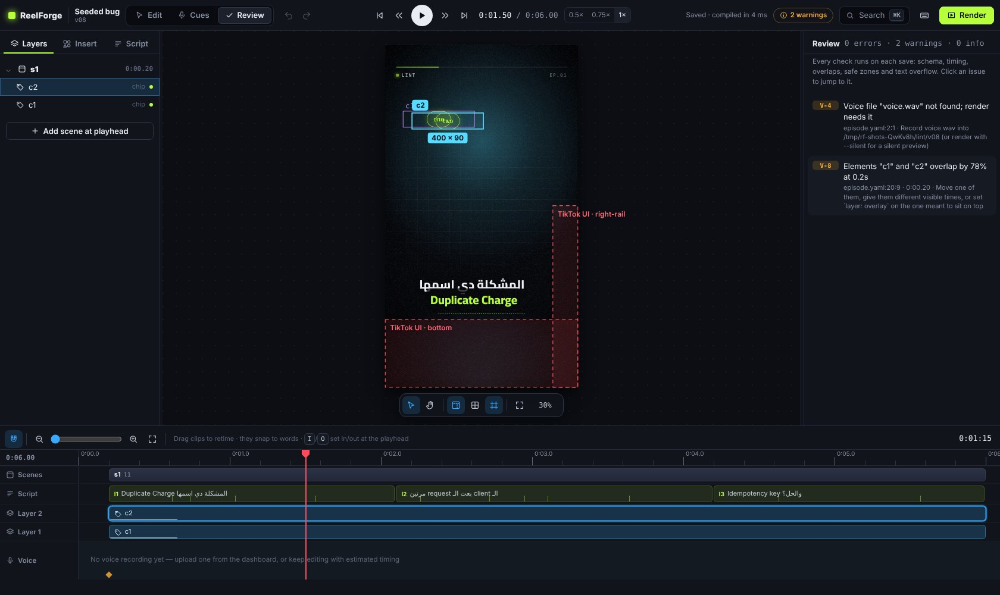
If episode.yaml has a syntax error (for example after editing it by hand), a banner shows the line
and the message. The editor keeps showing the last version that worked.
#Rendering from the editor
Click Render (⌘/Ctrl+Enter) and choose the platform, the share-file size, sound effects, silent mode (when there is no recording yet) and a fast draft. You can keep editing while it renders, and the progress shows in the top bar. When it finishes, the videos open in a player with download links.
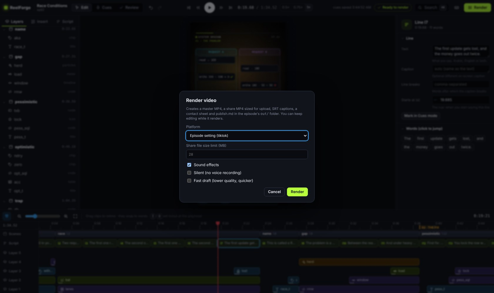
#Shortcuts at a glance
| Keys | Action |
|---|---|
| Space / K | Play / pause |
| J / L, , / . | −1 s / +1 s, previous / next frame |
| Home / End | Start / end |
| 1 2 3 | Speed 0.5× 0.75× 1× |
| ⌘/Ctrl+Z, ⌘/Ctrl+Shift+Z | Undo, redo |
| ⌘/Ctrl+D, ⌘/Ctrl+C, ⌘/Ctrl+V | Duplicate, copy, paste at the playhead |
| Delete | Delete the selection |
| ⌘/Ctrl+], ⌘/Ctrl+[ | Bring forward, send backward |
| I / O | Enter / exit at the playhead |
| A | Insert a component |
| N | Add a scene at the playhead |
| Tab / Shift+Tab | Next / previous element |
| Z, B, E | Safe zones, stage guides, outlines |
| S | Snapping |
| Alt+1 / 2 / 3 | Edit / Cues / Review |
| ⌘/Ctrl+K | Command palette |
| ? | All shortcuts |
#Writing episodes
Everything about an episode lives in episodes/<id>/:
episodes/ep10/
episode.yaml the spec (you write this)
voice.wav your recording (any sample rate, mono or stereo; other formats are converted with ffmpeg)
cues.json line start times (written by `reelforge cue`)
assets/ optional images/SVGs referenced as assets/<file>
out/ generated: master, share, SRT, contact sheet, publish.md
#1. The spec at a glance
meta:
id: ep10 # slug
series: 'SYSTEM DESIGN' # header text
title: 'Idempotency'
episode: 10
preset: tiktok # tiktok | reels | shorts (presets/*.preset.yaml)
theme: season1 # themes/<name>.theme.yaml, or a relative path
lang: en-US # en-US (left to right) · ar-EG (right to left, English terms supported)
publish: { cover: '…', caption: '…', hashtags: ['#systemdesign'], pinned: '…' }
audio:
voice: voice.wav
sfx: auto # auto | none | manual (only audio.extra and element sfx lists)
sfx_gain_db: -16
duck: true # duck SFX under the voice
extra: [{ at: "l9:'boom'", sound: hit, gain_db: -3 }]
script: # one spoken sentence per line; ids default to l1, l2, …
- text: 'Ever paid online and your connection dropped?'
- id: twice
text: 'And you got charged twice.'
break: ['twice'] # force a caption break before this word
caption: auto # auto | none | "custom caption text"
chapters:
- { at: l1, label: '01 · THE PROBLEM' }
scenes:
- id: hook
at: l1 # start; end defaults to the next scene's start
glow: red # or a list: [{ at: l1, color: red }, { at: l3, color: lime }]
transition: crossfade # crossfade | cut | slide-up
layout: stage # stage (between header and captions) | full (whole canvas)
elements:
- use: phone
id: phone
props: { title: 'Checkout', amount: '$49.00' }
place: { x: 320, y: 30, w: 440, h: 880 }
enter: { at: l1, anim: rise, dur: 0.6 }
exit: { at: l3, anim: fade }
states:
- { at: "l1:'dropped'", set: { offline: true } }
fx:
- { at: "twice:'twice'", do: shake, amp: 22 }
- { at: "twice:'twice'", do: flash, color: red }
#2. Time expressions
| Form | Meaning |
|---|---|
12.5s (or a YAML number 12.5) |
absolute seconds |
l7 |
cue start of line l7 |
l7.end |
start of the next line − 0.15 s |
l7:'timeout' |
first word matching "timeout" (punctuation, tatweel and diacritics ignored) |
l7:'request'#2 |
second match |
l7:"Conway's" |
use double quotes when the word contains ' |
l7:'Duplicate Charge' |
a multi-word phrase (time of its first word) |
l7.3 |
the 4th word (0-based) |
@hook, @hook.end |
a scene's start / end |
any of the above +0.4 / -0.2 |
offset in seconds |
Word times come from your manual word marks (Cues mode, word mode) or are estimated by letter count within the line. Every expression is validated; errors name the closest valid alternative. In the editor you rarely type these: the target button and timeline snapping write them for you.
Arabic works the same way: l7:'مرتين' anchors to an Arabic word, and English terms inside Arabic
sentences (الـ client) are matched as written.
#3. Placing elements
Stage coordinates: 1080 wide × 1000 high, origin at the top-left of the stage (canvas y = 270 for TikTok).
place: { x, y, w, h }— explicit box (integers)place: { center: true, w, h }— centeredplace: { anchor: top|bottom|left|right|center, w, h, margin }- no
place→ centered at the component's default size, or laid out by a scene helper:row: { gap, align, y, h }— elements side by sidecolumn: { gap, align, x, w }— stackedcolumns: 2(+gutter, elementcol: 0|1) — lanes
size: { w, h }overrides the default size inside helpers.layer: overlayputs an element on top and exempts it from the overlap rule (V-8).
Keep content out of the platform UI: the editor's Z overlay shows the safe zones of the preset. In the
editor you can simply drag and resize elements; it writes place for you.
#4. Animations
enter.anim: pop (default), rise, slide-l, slide-r, fade, draw, type, count, flip,
zoom, glitch, stamp, none. Parameters: dur, s0, dy, dist, cps, rot, amp.
exit.anim: fade, pop, rise, sink, slide-l, slide-r, zoom, none.
fx[].do: shake (target: camera shakes the whole stage), flash (full-frame color hit),
glitch, pulse (rate), bump. Flashes add a hit sound and glitches a glitch sound unless
sound: none.
States: states: [{ at, set: { … } }] — each component documents the keys it reacts to
(for example node.status, phone.offline, chip.strike, grid.tiles). See components.md.
#5. Sound effects
With audio.sfx: auto components emit their default sounds (title → whoosh, stamp → hit, table row → ding,
lane step → tick, …). Disable per element with sfx: none, or give a list
sfx: [{ at: l4, sound: ding }]. Sounds: whoosh hit ding err glitch tick tap typing. Events of the
same sound closer than 80 ms are merged.
#6. Themes and presets
Themes (themes/*.theme.yaml) hold every color, font, size and motion token and can extends:
another theme. chrome.grain_fps (default 0, a static texture) controls how often the film grain
changes; animated grain multiplies the file size (see ADR-011). Presets (presets/*.preset.yaml) hold the canvas, header/stage/caption positions,
safe-zone rectangles, share size and maximum duration — edit them without touching code.
#7. Validation rules
| Rule | Level | Meaning |
|---|---|---|
| V-1 | error | schema violation (with did-you-mean) |
| V-2 | error | unresolvable time expression |
| V-3 | error | missing/out-of-order cues |
| V-4 | warn | voice changed since cues were marked, or voice missing |
| V-5 | error | exit before enter, or enter outside the scene |
| V-6 | warn | element box outside the stage/canvas |
| V-7 | warn | element in a platform UI zone |
| V-8 | warn | two visible base elements overlap > 15% |
| V-9 | warn | text overflows its box (headless measurement) |
| V-10 | warn | caption wraps over max_lines |
| V-11 | info | nothing enters in a scene's first 1.5 s |
| V-12 | warn | element enters < 0.1 s before its scene ends |
| V-13 | error | unknown component or font |
reelforge validate <id> --strict fails on warnings too (use it in CI).
#Component reference
Generated from the schemas in packages/core/src/components/schemas.ts by
node scripts/gen-components-doc.mjs. Props are strict: unknown keys are errors with a
"did you mean" hint.
Conventions:
- Keys named
atanduntil(at any depth), andstrike/highlightwhen not booleans, are time expressions:12.5s,l7,l7+0.4,l7.end,l7:'word',l7:'word'#2,l7.3,@scene.end. - Keys named
color,accent,dangerandcolors[]take a theme color name (lime,cyan,red,amber,violet,ink,dim, …) or a CSS color. from/toendpoints are an element id (api), an element side (api.left|right|top|bottom|center) or a point{x, y}in stage coordinates.- Every element also takes the common keys:
id, place, size, col, layer, z, enter, exit, states, fx, sfx(see authoring.md).
| Component | Default size | Default enter | Layer | Purpose |
|---|---|---|---|---|
title |
960×240 | rise | base | Big display text; accent markup colors words with the accent color. |
label |
640×60 | fade | base | Small uppercase monospace label. |
code |
960×520 | rise | base | Code card with token colors that types itself. |
node |
300×170 | pop | base | Box with a title and a sub-status; status changes its color. |
arrow |
200×40 | draw | overlay | Straight, elbow or curved arrow with an optional label and moving packets. |
chip |
340×84 | pop | base | Pill/tag, optionally struck through. |
stamp |
680×260 | stamp | overlay | Rotated bordered word that slams in (×2, DEADLOCK). |
table |
960×440 | pop | base | Header + rows with animated row inserts and highlights. |
lanes |
960×760 | pop | base | Parallel columns of timed steps (race conditions). |
checklist |
880×460 | pop | base | Items with check boxes appearing in sequence. |
counter |
820×320 | pop | base | Big number counting between keyframe values. |
meter |
880×180 | pop | base | Horizontal bar with an optional threshold marker. |
timeline |
960×260 | pop | base | Axis with markers at relative positions (backoff, TTL). |
grid |
640×640 | pop | base | N×M tiles with per-tile states (thread pool, shards, services). |
bucket |
440×560 | pop | base | Token bucket whose tokens are consumed and refilled over time. |
phone |
440×880 | pop | base | Phone mock with a checkout screen, button taps and notifications. |
quote |
940×460 | rise | base | Quote card with author; the quote types itself. |
particles |
1080×1000 | none | overlay | Seeded particle bursts, herds, streams, dust or confetti. |
trap |
1080×1000 | glitch | overlay | The series "THE TRAP" interstitial with warning tapes. |
cta |
960×560 | rise | base | "Next episode" title plus a comment box typing a keyword. |
icon |
160×160 | pop | base | Inline SVG icon from the bundled set, or an SVG from assets/. |
#title
Big display text; accent markup colors words with the accent color.
| Prop | Type | Default | Required |
|---|---|---|---|
text |
string | yes | |
size |
number | ||
align |
left | center | right |
"center" |
|
color |
string | "ink" |
|
accent |
string | "lime" |
|
font |
auto | display | arabic | mono |
"auto" |
|
weight |
integer | 800 |
|
sub |
string |
#label
Small uppercase monospace label.
| Prop | Type | Default | Required |
|---|---|---|---|
text |
string | yes | |
color |
string | "dim" |
|
size |
number | ||
align |
left | center | right |
"left" |
|
dot |
boolean | false |
#code
Code card with token colors that types itself.
| Prop | Type | Default | Required |
|---|---|---|---|
title |
string | ||
lang |
string | "ts" |
|
lines |
(string | { text, color, at, dim })[] | yes | |
fontSize |
number | 30 |
|
cps |
number | 28 |
|
caret |
boolean | true |
|
numbers |
boolean | true |
|
typing |
boolean | true |
|
highlight |
{ line, at, until, color }[] | [] |
#node
Box with a title and a sub-status; status changes its color.
| Prop | Type | Default | Required |
|---|---|---|---|
title |
string | yes | |
sub |
string | ||
color |
string | "cyan" |
|
status |
idle | ok | err | warn | busy | off |
"idle" |
|
icon |
lock | unlock | bell | clock | warn | bubble | bomb | check | x | server | db | user | users | bolt | card | wifi | wifi-off | cloud | key | mail | cart | cpu | queue | shield | fire | refresh | hourglass | phone | code | globe |
||
badge |
string |
#arrow
Straight, elbow or curved arrow with an optional label and moving packets.
| Prop | Type | Default | Required |
|---|---|---|---|
from |
string | { x, y } | yes | |
to |
string | { x, y } | yes | |
label |
string | ||
color |
string | "dim" |
|
dashed |
boolean | false |
|
route |
straight | elbow | curve |
"straight" |
|
width |
number | 5 |
|
head |
end | start | both | none |
"end" |
|
packet |
boolean | { at, dur, color, reverse, label } | false |
|
packets |
{ at, dur, color, reverse, label }[] | [] |
|
gap |
number | 14 |
#chip
Pill/tag, optionally struck through.
| Prop | Type | Default | Required |
|---|---|---|---|
text |
string | yes | |
color |
string | "lime" |
|
strike |
boolean | string | number | false |
|
icon |
lock | unlock | bell | clock | warn | bubble | bomb | check | x | server | db | user | users | bolt | card | wifi | wifi-off | cloud | key | mail | cart | cpu | queue | shield | fire | refresh | hourglass | phone | code | globe |
||
variant |
solid | outline | soft |
"soft" |
|
size |
number | 34 |
#stamp
Rotated bordered word that slams in (×2, DEADLOCK).
| Prop | Type | Default | Required |
|---|---|---|---|
text |
string | yes | |
color |
string | "red" |
|
size |
number | 120 |
|
rot |
number | -5 |
#table
Header + rows with animated row inserts and highlights.
| Prop | Type | Default | Required |
|---|---|---|---|
columns |
string[] | yes | |
rows |
{ cells, at, highlight, color, strike }[] | [] |
|
widths |
number[] | ||
fontSize |
number | 28 |
|
accent |
string | "lime" |
#lanes
Parallel columns of timed steps (race conditions).
| Prop | Type | Default | Required |
|---|---|---|---|
lanes |
{ title, color, steps }[] | yes | |
interleave |
boolean | true |
|
fontSize |
number | 26 |
#checklist
Items with check boxes appearing in sequence.
| Prop | Type | Default | Required |
|---|---|---|---|
title |
string | ||
items |
{ text, at, ok }[] | yes | |
fontSize |
number | 36 |
|
color |
string | "lime" |
#counter
Big number counting between keyframe values.
| Prop | Type | Default | Required |
|---|---|---|---|
keyframes |
{ at, value, dur }[] | yes | |
from |
number | 0 |
|
prefix |
string | "" |
|
suffix |
string | "" |
|
decimals |
integer | 0 |
|
separator |
boolean | true |
|
label |
string | ||
color |
string | "ink" |
|
size |
number | 180 |
#meter
Horizontal bar with an optional threshold marker.
| Prop | Type | Default | Required |
|---|---|---|---|
keyframes |
{ at, value, dur }[] | yes | |
from |
number | 0 |
|
max |
number | 100 |
|
threshold |
number | ||
label |
string | ||
unit |
string | "" |
|
color |
string | "lime" |
|
danger |
string | "red" |
#timeline
Axis with markers at relative positions (backoff, TTL).
| Prop | Type | Default | Required |
|---|---|---|---|
markers |
{ pos, label, sub, at, color }[] | [] |
|
start |
string | ||
end |
string | ||
color |
string | "cyan" |
|
cursor |
{ at, pos, dur }[] | [] |
#grid
N×M tiles with per-tile states (thread pool, shards, services).
| Prop | Type | Default | Required |
|---|---|---|---|
cols |
integer | yes | |
rows |
integer | yes | |
tiles |
(string | { label, state })[] | [] |
|
steps |
{ at, set }[] | [] |
|
gap |
number | 14 |
|
label |
string |
#bucket
Token bucket whose tokens are consumed and refilled over time.
| Prop | Type | Default | Required |
|---|---|---|---|
capacity |
integer | yes | |
keyframes |
{ at, tokens }[] | [] |
|
label |
string | ||
rate |
string | ||
color |
string | "lime" |
#phone
Phone mock with a checkout screen, button taps and notifications.
| Prop | Type | Default | Required |
|---|---|---|---|
title |
string | "Checkout" |
|
amount |
string | ||
item |
string | ||
button |
string | "Pay now" |
|
notifications |
{ title, text, at, color, icon }[] | [] |
|
taps |
{ at }[] | [] |
|
offline |
boolean | false |
|
loading |
boolean | false |
|
success |
boolean | string | false |
#quote
Quote card with author; the quote types itself.
| Prop | Type | Default | Required |
|---|---|---|---|
text |
string | yes | |
author |
string | ||
highlight |
string[] | [] |
|
cps |
number | 32 |
|
color |
string | "lime" |
|
size |
number | 56 |
#particles
Seeded particle bursts, herds, streams, dust or confetti.
| Prop | Type | Default | Required |
|---|---|---|---|
kind |
burst | herd | stream | dust | confetti |
"burst" |
|
from |
string | { x, y } | ||
to |
string | { x, y } | ||
count |
integer | 40 |
|
at |
time | ||
dur |
number | 1.2 |
|
color |
string | "lime" |
|
colors |
string[] | ||
size |
number | 10 |
|
spread |
number | 140 |
|
seed |
integer | 1 |
#trap
The series "THE TRAP" interstitial with warning tapes.
| Prop | Type | Default | Required |
|---|---|---|---|
title |
string | "THE TRAP" |
|
sub |
string | ||
at |
time | ||
until |
time | ||
color |
string | "amber" |
#cta
"Next episode" title plus a comment box typing a keyword.
| Prop | Type | Default | Required |
|---|---|---|---|
label |
string | "NEXT EPISODE" |
|
next |
string | yes | |
keyword |
string | ||
prompt |
string | "Comment" |
|
at |
time | ||
color |
string | "lime" |
#icon
Inline SVG icon from the bundled set, or an SVG from assets/.
| Prop | Type | Default | Required |
|---|---|---|---|
name |
lock | unlock | bell | clock | warn | bubble | bomb | check | x | server | db | user | users | bolt | card | wifi | wifi-off | cloud | key | mail | cart | cpu | queue | shield | fire | refresh | hourglass | phone | code | globe |
||
src |
string | ||
size |
number | 140 |
|
color |
string | "ink" |
|
pulse |
boolean | false |
|
ring |
boolean | false |
#Themes and platform presets
#Themes
A theme (themes/<name>.theme.yaml) holds every color, font size and motion token. Episodes choose one
with meta.theme. A theme can extends: another and override only what changes:
name: myseries
extends: default
colors:
lime: '#3cc8ff' # the accent color (titles, active caption word)
bg: '#070c0e'
chrome: { grain: 0.05, waveform: true }
captions: { active: lime, english: cyan, max_chars: 34 }
| Group | Tokens |
|---|---|
colors |
bg ink dim line card lime cyan red amber violet (add your own names freely) |
fonts |
display (Space Grotesk), mono (JetBrains Mono), arabic (Cairo) |
type |
font sizes: caption title h2 body label |
chrome |
header progress waveform grid (on/off), grain (0–1), grain_fps (0 = static), vignette (0–1) |
motion |
pop_overshoot default_dur crossfade |
captions |
active english colors, future_opacity, max_lines, max_chars, scrim |
Generate a complete palette from one color:
reelforge theme new myseries --accent "#3cc8ff"
ReelForge warns when a caption color has less than 7:1 contrast against the background.
#Platform presets
presets/tiktok.preset.yaml, reels.preset.yaml and shorts.preset.yaml define the header, stage and
caption positions, the safe-zone rectangles, the default share size and the maximum duration. Edit them
freely or add your own (presets/<name>.preset.yaml), then select it with meta.preset or
--preset when rendering.
#Rendering and outputs
Render from the dashboard (Render on a card) or the command line:
reelforge render ep10
reelforge render ep10 --preset reels --share-size 50
reelforge render ep10 --from 12 --to 20 # quick partial check → out/ep10.part.mp4
reelforge render --all # every episode in episodes/
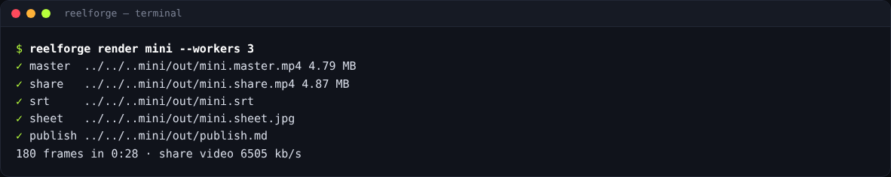
#Outputs (episodes/<id>/out/)
| File | Use |
|---|---|
<id>.master.mp4 |
Archival quality: H.264 High, CRF 18, AAC 192 kb/s |
<id>.share.mp4 |
Upload this one. Two-pass encoded to fit the share size (default 28 MB) |
<id>.srt |
Captions for YouTube or accessibility |
<id>.sheet.jpg |
12-frame contact sheet for a quick review |
publish.md |
Your cover text, caption, hashtags, pinned comment and chapters, ready to paste |
<id>.cover.png |
Cover image (reelforge snap <id> <time> --cover) |
Every video is verified after encoding: H.264 High profile, yuv420p, 30 fps constant frame rate, AAC 48 kHz, “fast start” (plays while downloading) and the size limit.
#Options
| Option | Meaning |
|---|---|
--preset tiktok|reels|shorts |
Platform layout and safe zones |
--share-size <MB> |
Size cap of the share file |
--workers <n> |
Parallel render processes (default: CPU cores − 1) |
--fast |
Faster final encoding (slightly larger master) |
--no-sfx |
Without sound effects |
--silent |
Allow rendering without a recording (for previews) |
--no-share |
Master only |
--lossless |
PNG frame capture instead of JPEG (slower, for archiving) |
#Performance
Rendering uses all your cores. Approximate times for a 2-minute episode: 4 cores ≈ 10 min, 8 threads ≈ 5–6 min. Press Ctrl+C (or Cancel in the dashboard) at any time: partial files are removed.
#Uploading
- TikTok: upload
share.mp4; paste the caption and hashtags frompublish.md. - Instagram Reels: render with
--preset reelsfor its safe zones. - YouTube Shorts: render with
--preset shorts(max 3 minutes); upload<id>.srtas subtitles.
#Command-line reference
On Windows use reelforge.cmd; on macOS/Linux ./reelforge (or add the folder to your PATH).
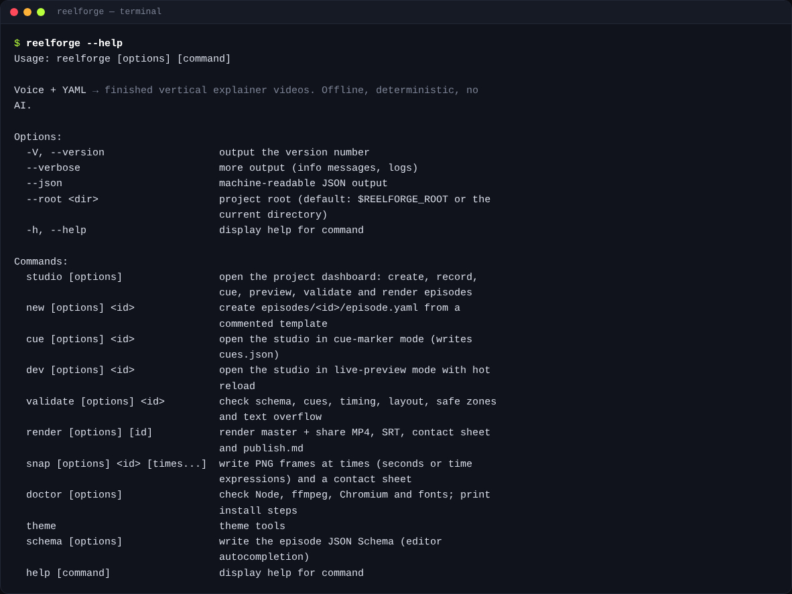
| Command | Description |
|---|---|
reelforge studio |
Open the project dashboard |
reelforge new <id> [--series <name>] [--episode <n>] [--lang en|ar] |
Create episodes/<id>/episode.yaml |
reelforge edit <id> |
Open the visual editor |
reelforge cue <id> [--draft] |
Open the editor in Cues mode (--draft writes estimated cues instead) |
reelforge dev <id> |
Open the editor in Review mode |
reelforge mcp |
Run the MCP server for AI assistants (see AI agents & MCP) |
reelforge validate <id> [--strict] [--no-measure] |
Check everything; exit code 1 on errors (or warnings with --strict) |
reelforge render <id> [options] / --all |
Render (see Rendering) |
reelforge snap <id> <times…> [--every 5] [--cover] |
PNG frames + contact sheet; times may be 12.5, l7, "l7:'word'" |
reelforge doctor [--fix] |
Check the environment; --fix downloads Chromium |
reelforge theme new <name> --accent <#hex> |
Generate a theme |
reelforge schema [--out <file>] |
Write the JSON Schema for editor autocompletion |
Global options: --json (machine-readable output, progress events while rendering), --verbose,
--root <folder> (project folder; default: the current folder).
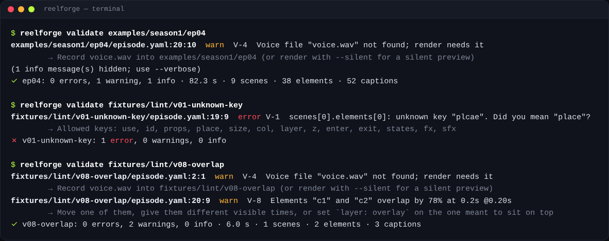
#Environment variables
| Variable | Meaning |
|---|---|
REELFORGE_ROOT |
Project folder |
REELFORGE_PRESET |
Default preset |
REELFORGE_WORKERS |
Render processes |
REELFORGE_SHARE_SIZE |
Share size in MB |
REELFORGE_JPEG_QUALITY |
Frame capture quality (default 95) |
REELFORGE_PORT |
Dashboard / studio port |
REELFORGE_NO_OPEN |
Do not open the browser automatically |
REELFORGE_FFMPEG, REELFORGE_FFPROBE |
Paths to ffmpeg / ffprobe |
REELFORGE_CHROMIUM |
Path to a Chromium executable |
NO_COLOR |
Disable colors |
#AI agents & MCP
ReelForge works on its own: you write the script, design scenes in the editor and render. If you use an AI assistant, it can do the heavy lifting for you:
- write the script;
- build every scene;
- check the result by looking at rendered frames;
- fix problems.
You stay in control. You record your own voice, mark the cues by ear and approve the result in the editor.
Assistants connect through the Model Context Protocol (MCP), an open standard supported by Claude, Cursor, GitHub Copilot, Windsurf, Codex, Gemini CLI, Cline and others. ReelForge ships an MCP server:
./reelforge mcp # macOS / Linux
reelforge.cmd mcp # Windows
You don't run this yourself. Your AI client starts it when needed. It talks over standard input/output, runs on your computer and never sends your files anywhere. The AI service only sees what your client sends it.
#What the assistant can do
| Tool | What it does |
|---|---|
list_episodes |
Lists the episodes and examples in the project |
get_episode |
Reads an episode: the YAML plus a compiled outline (line times, element boxes) |
create_episode |
Creates an episode from a script (English or Arabic) |
edit_episode / write_episode_yaml |
Changes scenes, elements, timing and settings (comments in your file are kept) |
validate_episode |
Runs every check (schema, timing, overlap, safe zones, text overflow) |
preview_frames |
Renders still frames and shows them to the assistant |
list_components / get_component_schema |
Lists the 21 components and their exact properties |
draft_cues / set_cues |
Writes estimated or known line timings |
render_episode / get_render_status / cancel_render |
Renders the final videos in the background, reports progress, cancels |
open_editor |
Opens the visual editor so you can review and fine-tune |
doctor |
Checks Node.js, FFmpeg, Chromium and fonts |
It also offers the make_explainer prompt. Give it a topic and the assistant follows the whole workflow.
#Setup by client
The project folder already contains ready-made configuration for Claude Code, Cursor, VS Code and
Gemini CLI. For the other clients, add the server yourself. In the examples below, replace
/path/to/ReelForge with the folder where you unzipped ReelForge. On Windows, write it like
C:/Users/you/ReelForge.
#Claude Code
Open a terminal in the ReelForge folder and run claude. The included .mcp.json registers the
server; approve it when asked. To add it by hand:
claude mcp add reelforge -- node packages/cli/bin/reelforge.js mcp
Try: "Make a 40-second English episode about database indexes, preview it and fix any issues."
#Claude Desktop
Open Settings → Developer → Edit Config. This opens claude_desktop_config.json, which lives
in ~/Library/Application Support/Claude/ on macOS and in %APPDATA%\Claude\ on Windows. Add:
{
"mcpServers": {
"reelforge": {
"command": "node",
"args": ["/path/to/ReelForge/packages/cli/bin/reelforge.js", "mcp", "--root", "/path/to/ReelForge"]
}
}
}
Restart Claude Desktop. ReelForge then appears in the tools menu.
#Cursor
Open the ReelForge folder. The included .cursor/mcp.json registers the server, and
.cursor/rules/reelforge.mdc teaches the agent the rules. Enable reelforge in
Settings → MCP.
#VS Code with GitHub Copilot
Open the ReelForge folder. The included .vscode/mcp.json registers the server; click Start
above it. In Copilot Chat, choose Agent mode and enable the ReelForge tools.
.github/copilot-instructions.md gives Copilot the project rules.
#Windsurf
Go to Settings → Cascade → MCP servers → View raw config (~/.codeium/windsurf/mcp_config.json)
and add the same mcpServers block as for Claude Desktop. The rules are in
.windsurf/rules/reelforge.md.
#OpenAI Codex CLI
Add this to ~/.codex/config.toml:
[mcp_servers.reelforge]
command = "node"
args = ["/path/to/ReelForge/packages/cli/bin/reelforge.js", "mcp", "--root", "/path/to/ReelForge"]
Codex reads AGENTS.md automatically.
#Gemini CLI
Run gemini in the ReelForge folder. The included .gemini/settings.json registers the server and
GEMINI.md loads the rules. Check it with /mcp.
#Cline, Roo Code, Continue, Zed and others
Any client that supports stdio MCP servers works. Use node as the command, with the arguments
/path/to/ReelForge/packages/cli/bin/reelforge.js mcp --root /path/to/ReelForge.
#Instruction files for agents
| File | Read by |
|---|---|
AGENTS.md |
Codex, Cursor, Copilot, Windsurf, Zed, Aider, Jules and most agents |
CLAUDE.md |
Claude Code (imports AGENTS.md) |
GEMINI.md |
Gemini CLI (imports AGENTS.md) |
.github/copilot-instructions.md |
GitHub Copilot |
.cursor/rules/reelforge.mdc |
Cursor |
.windsurf/rules/reelforge.md |
Windsurf |
llms.txt |
Assistants that look for an llms.txt index |
They describe the workflow, the episode format, the layout rules and a quality checklist. Edit them to add your own house style, for example your series' colors, tone of voice or standard ending.
#Tips
- Ask the assistant to look. Say "preview the frames and fix anything that looks off". The assistant receives the frames as images.
- Keep the voice human. ReelForge never generates voices. Record yourself, then mark cues in
the editor's Cues mode. Word-anchored timing such as
l3:'bucket'follows your real delivery automatically. - Review in the editor. Ask for
open_editorto get a link. Everything the assistant wrote is editable visually, and every change can be undone. - Large changes: the assistant can rewrite the whole
episode.yaml. The file is checked before it is saved, and invalid YAML is refused.
#Troubleshooting and FAQ
The dashboard says “setup issues”. Click the pill: each failed check shows its fix. Most often ffmpeg is
missing (Windows: winget install Gyan.FFmpeg, macOS: brew install ffmpeg, Linux: your package
manager) — then restart start.bat / start.sh.
“Cannot launch Chromium”. Run reelforge doctor --fix. On Linux, also run the installer again and
accept the system libraries prompt.
“ffmpeg not found” although I installed it (Windows). Close every terminal and start.bat, then
reopen: Windows only picks up the new PATH in new windows.
A word reference fails: Word "x" not found in line l7. The error shows the closest word in that
line. Words are matched without punctuation and diacritics. For a word containing an apostrophe use double
quotes: l7:"Conway's". You can also use the word index: l7.3 (4th word).
The caption wraps over three lines (V-10). Add break: ["word"] to the script line to split the
caption before that word, or lower captions.max_chars in the theme.
Text overflows its box (V-9). Shorten the text, lower fontSize, or enlarge place.w/h. Titles,
quotes and stamps shrink automatically to fit.
An element sits under the TikTok buttons (V-7). Press Z in the editor to show the safe zones, and keep content out of the red areas.
Can I use my own fonts? v1.0 ships Cairo (Arabic), Space Grotesk and JetBrains Mono so renders never depend on system fonts. Custom fonts are on the roadmap.
Does ReelForge need the internet? Only during installation (dependencies, Chromium, ffmpeg). Creating, editing and rendering are fully offline. If you use an AI assistant through MCP, the assistant itself needs its own internet connection and subscription; ReelForge's MCP server stays local.
Can I render on a server / in CI? Yes: everything is available from the command line (--json gives
machine-readable output) and works headless on Linux.
Can I sell the videos I make? Yes — the videos are yours, including for clients and monetized channels. See License.
Where are my files? Each episode is a folder in episodes/ containing episode.yaml, voice.wav,
cues.json, assets/ and out/. Back it up like any other folder (Git works great).
#Changelog
All notable changes to ReelForge are documented here. The project follows Semantic Versioning.
#1.0.0 — 2026-10-16
First public release.
#Highlights
- Visual editor (
reelforge edit): canvas with zoom/pan, hover and selection, drag and resize with smart guides, nudging and in-place text editing; layers panel with drag-to-reorder and rename; component library with drag-and-drop; schema-driven inspector for every property (scrubbable numbers, theme color swatches, word-anchored times, lists, effects, states, YAML view); Premiere-style multi-track timeline (scenes, script cues, layer tracks, waveform, SFX) with magnetic snapping to spoken words; undo/redo acrossepisode.yamlandcues.json; ⌘K command palette, context menus, a shortcut sheet, resizable panels and a first-run tour. Edits keep the comments and formatting ofepisode.yaml. - Project dashboard (
reelforge studio): create English or Arabic episodes, upload recordings (WAV, MP3, M4A, OGG, FLAC…), open the editor, validate and render with live progress, play and download. - Cues mode: mark sentence starts with Space at 0.5×–1× speed, nudge by 50/10 ms, re-mark any line, word mode, snap to onset, undo, autosave; or drag cues on the timeline.
- Review mode: true 1080×1920 preview synced to the audio, hot reload on save, platform safe-zone, stage and element-box overlays, every check with click-to-select, error banner that keeps the last good frame.
- AI agents (optional):
reelforge mcp, a Model Context Protocol server (create, read, edit, validate, preview frames as images, render) plus instruction files for Claude Code, Codex, Cursor, Copilot, Gemini CLI and Windsurf (AGENTS.md,CLAUDE.md,GEMINI.md, …) and ready-made MCP configs. - Examples: the 9-episode “System Design” series in English, and the same series in Arabic.
- 21 animated components: title, label, code, node, arrow, chip, stamp, table, lanes, checklist, counter, meter, timeline, grid, bucket, phone, quote, particles, trap, cta, icon.
- Captions in English and Arabic: word-by-word karaoke highlight, correct RTL/LTR mixing,
الـ termkept together, punctuation on the correct side. - Procedural sound effects and voice mastering to −14 LUFS with ducking and a limiter.
- Rendering: deterministic parallel frame capture; H.264 master (CRF 18) and a size-capped share
file for TikTok, Reels and Shorts, plus SRT captions, a contact sheet and
publish.md; every output is verified (codec, profile, pixel format, frame rate, AAC 48 kHz, faststart, size). - Validation: 13 rules with
file:line:collocations and fix hints. - Themes and presets in editable YAML;
reelforge theme new --accent #hex. - CLI:
studio,new(--lang),edit,cue,dev,mcp,validate,render(--all),snap(--cover),doctor,schema,theme new. - One-command installers for Windows, macOS and Linux.
#License and credits
ReelForge is sold on Envato Market (CodeCanyon) under the Regular or Extended License you purchased.
The videos you create with it are yours, for any use. The full terms are in LICENSE.md.
ReelForge is built on excellent open-source software, used under its own licenses (full texts in
THIRD-PARTY-NOTICES.md):
| Component | License |
|---|---|
| Cairo, JetBrains Mono, Space Grotesk fonts | SIL Open Font License 1.1 |
| Playwright | Apache-2.0 |
| zod, commander, ws | MIT |
| yaml, zod-to-json-schema | ISC |
FFmpeg and Chromium are installed separately and are not distributed with ReelForge.
#Support
Use the Support tab on the CodeCanyon item page. Please include your operating system, the output of
reelforge doctor --json and the command you ran with --verbose. Details in SUPPORT.md.